TL;DR: We simplify and improve Representation Autoencoders. Introducing RAEv2: over 10× faster convergence, better reconstruction, better generation, and better on T2I and world models.
Better generation. Over 10× faster convergence. Compared to prior baselines (800 epochs), RAEv2 achieves state-of-the-art gFID and FDr6 in just 80 epochs with no post-training.
Pareto-optimal reconstruction-generation. A generalized formulation of RAE improves reconstruction without encoder finetuning or specialized data.
Efficient inference. When used with RAE, REPA itself can be reused for guidance. This eliminates the need for training a second weaker diffusion model (AutoGuidance) or an additional forward pass (CFG).
Generalized Representation Encoders. Pretrained vision encoders are more than their final layer. Aggregating features across layers of a pretrained vision encoder greatly improves reconstruction without encoder finetuning or specialized data (e.g., text, faces).
2
RAE and REPA exhibit complementary working mechanisms. RAE leverages semantic quality while REPA regularizes spatial structure. This complementary nature allows using same pretrained representation as both encoder (RAE) and target for intermediate diffusion features (REPA). This also explains why stronger representations like DINOv3-L, which excel in both global and spatial performance, achieve the best generation with RAEv2.
3
REPA enables self-guidance. REPA is x-prediction in RAE latent space. By reformulating the output head also as x-prediction, the REPA head itself can be used for internal guidance. This eliminates the need for a separate model (AutoGuidance) or extra forward pass (CFG).
Overview
Representation Autoencoders (RAE)[1] replace the traditional VAE with pretrained vision encoders (DINOv2[8], DINOv3[9], SigLIP, ...). This provides an elegant solution for unified tokenization across understanding and generation.
We make representation autoencoders simpler and better:
Better reconstruction
Better generation
Over 10× faster training efficiency
Better performance on T2I and world models
Introducing RAEv2
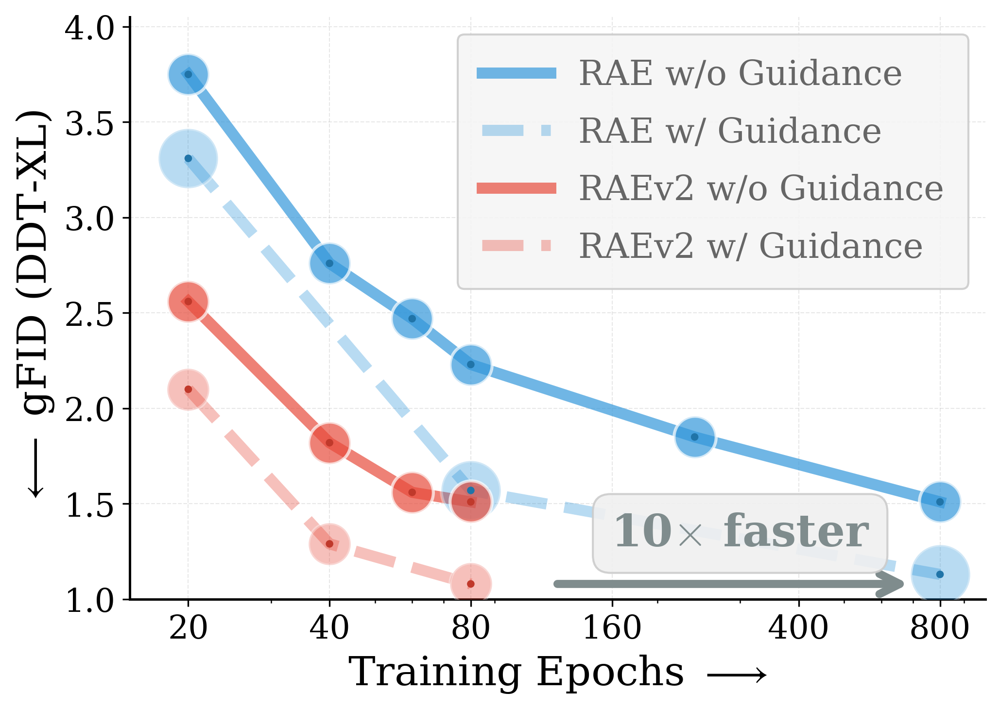
Improved Representation Autoencoders.Left: RAEv2 exhibits Pareto-optimal reconstruction–generation at less than half the encoder FLOPs, with no encoder finetuning or specialized data.
Right: over 10× faster convergence, reaching state-of-the-art gFID of 1.06 in just 80 epochs.
Qualitative reconstruction comparisons. RAEv2 performs competitively with proprietary VAEs. Please see Section 2.1 for more detailed results.
Prior RAE work treats the encoder output as the final-layer feature of a pretrained vision encoder. However, different layers of a pretrained encoder capture complementary features. Can we leverage these features across all layers without encoder finetuning or specialized data?
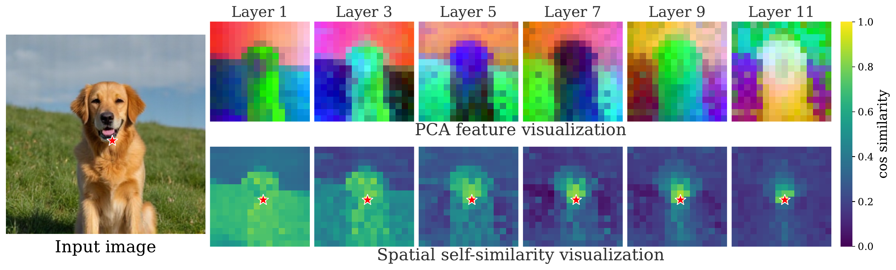
Different layers of a pretrained encoder provide complementary features. Aggregating across layers yields richer representations than using the final layer alone.
We consider a simple solution. We define a generalized formulation where the RAE output is the sum of the last $K$ encoder layers. The original RAE is recovered at $K{=}1$. By simply varying $K$, we get easy control over reconstruction quality while also improving generation performance and preserving understanding performance. See Section 3.1 for the full $K$ sweep.
Finding 1: Generalized Representation Encoders. Pretrained vision encoders are more than their final layer. Simply aggregating features across layers of a pretrained vision encoder greatly improves reconstruction without encoder finetuning or specialized data (e.g., text, faces).
Varying $K$ improves both reconstruction and generation
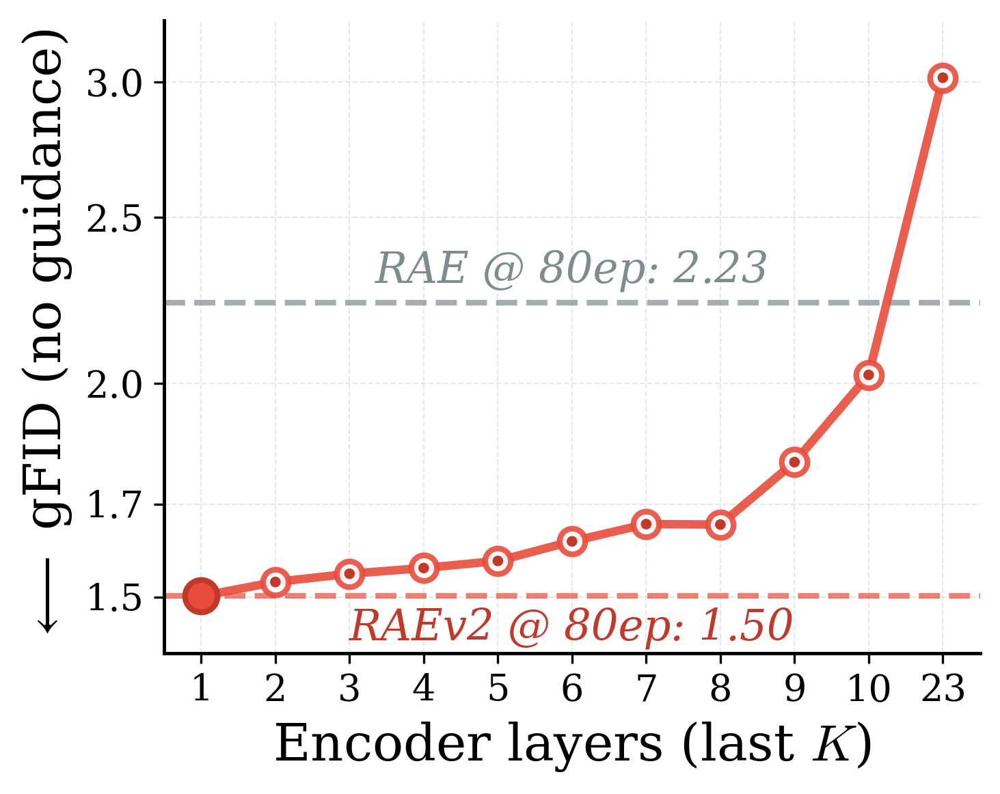
(a) gFID ↓ (no guidance)
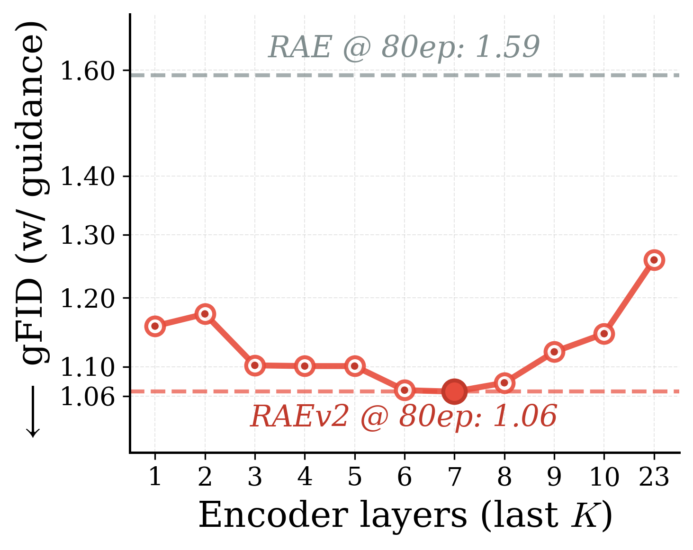
(b) gFID ↓ (with guidance)
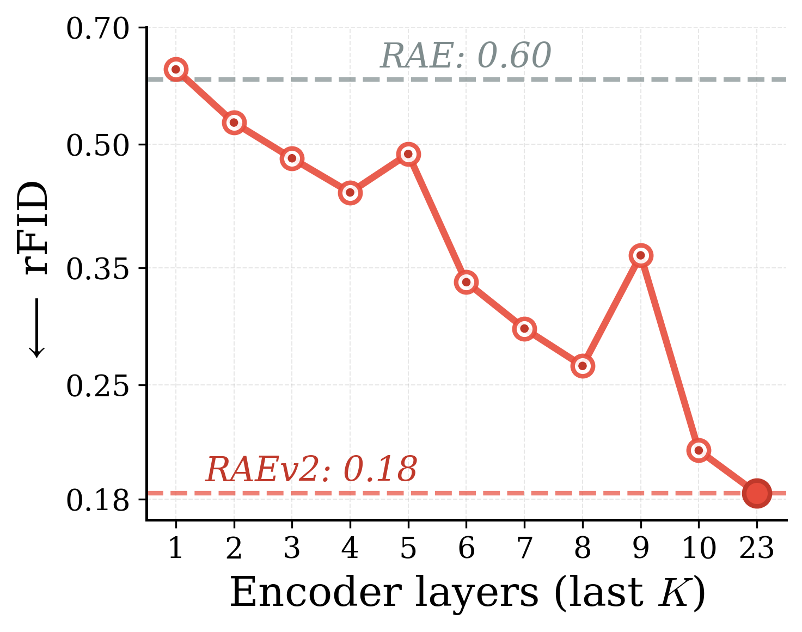
(c) rFID ↓
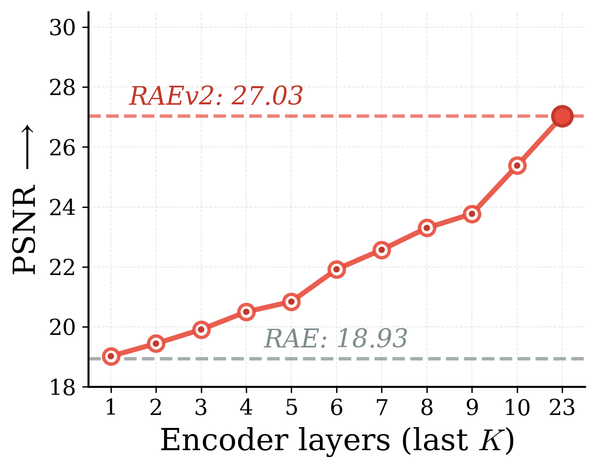
(d) PSNR ↑
Variation in $K$ for generalized representation autoencoders. By simply varying $K$, we get easy control over reconstruction-generation performance. Interestingly, $K{=}7$ improves reconstruction while also providing the best generation with guidance (gFID 1.06).
Pareto-optimal reconstruction-generation
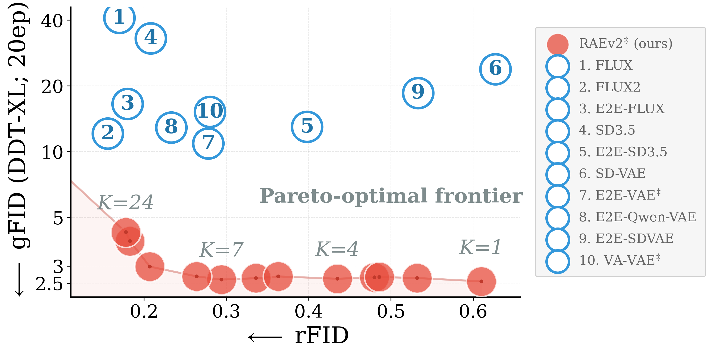
Reconstruction-generation trade-off. RAEv2 sits on the Pareto frontier.
$K$
LP top-1 (%) ↑
1 (last layer; RAE)
85.39
4
85.15
7
85.10
23 (full MLS)
85.24
Linear probing on ImageNet across $K$ (DINOv3-L). Understanding is preserved.
Finding 2. The generalized formulation of RAE improves reconstruction and guided generation while preserving global semantics of the representation space. This enables its use for a unified tokenization for both understanding and generation.
2.2 RAE and REPA Exhibit Complementary Mechanisms
The prevailing assumption[1][15][16] is that RAE eliminates the need for REPA[2], since RAE already uses the encoder representation as the latent space. Distilling the same representation again to intermediate diffusion layers looks like a wasteful skip connection. We test this assumption at scale across 27 vision encoders and find the opposite: using REPA on top of RAE consistently improves generation. This suggests fundamentally different working mechanisms.
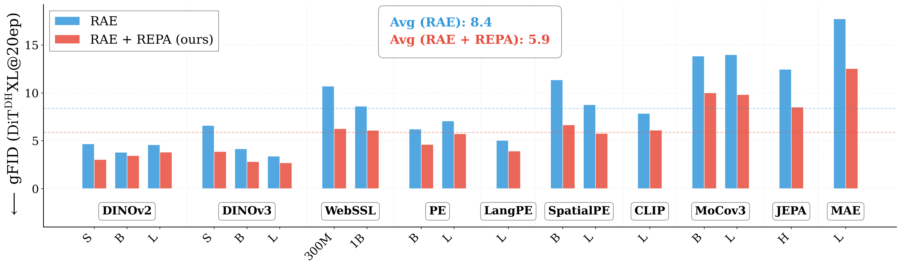
RAE does not eliminate the need for REPA. Across all 27 pretrained representations, adding REPA on top of RAE consistently improves generation, contrary to the wasteful-skip-connection hypothesis.
Working mechanism
REPA[2] on top of RAE has minimal impact on the peak global semantic information (linear probing) of intermediate diffusion features. It instead substantially improves their spatial self-similarity structure. This effect was identified in iREPA[3].
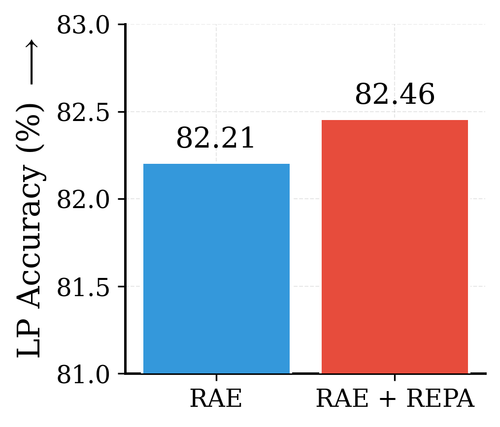
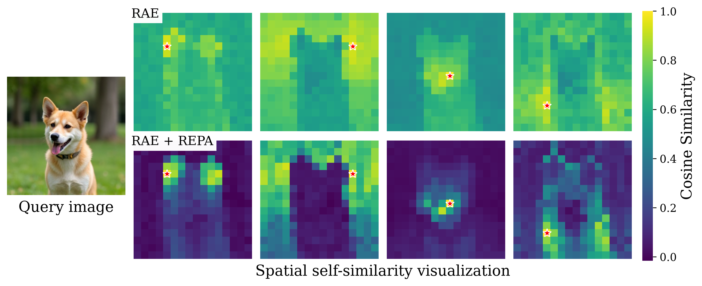
Working mechanism of REPA with RAE. While REPA applied with RAE has minimal impact on global semantics (left), it significantly improves spatial structure of diffusion features (right).
Correlation analysis
To quantify this, we correlate two encoder properties with downstream gFID across 27 encoders: ImageNet linear probing (LP, global semantics) and local distance similarity (LDS, spatial structure). A more negative Pearson $r$ means a stronger predictor of gFID.
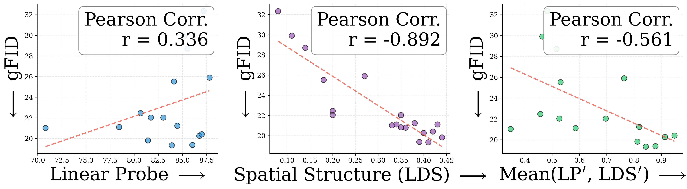
(a) REPA alone
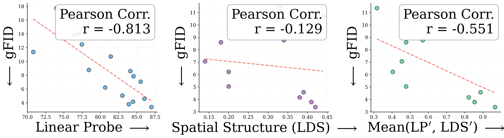
(b) RAE alone
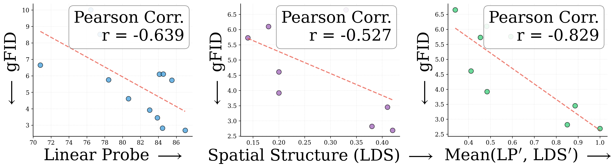
(c) RAE + REPA
Method
LP ($r$) ↓
LDS ($r$) ↓
Avg ($r$) ↓
REPA alone
+0.34
−0.89
−0.56
RAE alone
−0.81
−0.13
−0.55
RAE + REPA
−0.64
−0.53
−0.83
(d) Pearson $r$ with gFID
REPA alone correlates most with spatial structure (LDS). RAE alone benefits most from global semantics (LP). Together, RAE+REPA benefit from encoders strong in both. This is why stronger encoders like DINOv3-L, which excel on both axes, yield the best generation with RAEv2.
Finding 3: RAE and REPA exhibit complementary working mechanisms. RAE leverages semantic quality while REPA regularizes spatial structure. This complementary nature allows using same pretrained representation as both encoder (RAE) and target for intermediate diffusion features (REPA). This also explains why stronger representations like DINOv3-L, which excel in both global and spatial performance, achieve the best generation with RAEv2.
2.3 REPA for Self-Guidance
RAE struggles with traditional CFG[4] and instead relies on AutoGuidance[5]: a separately-trained weaker diffusion model. We show this is unnecessary.
REPA is x-prediction[6] in RAE latent space. In RAE, the clean latent is the encoder representation: $\mathbf{x} = E(\mathbf{I})$. The REPA head $h_\phi$ predicts $\hat{\mathbf{x}}_{\text{repa}} = h_\phi(\mathbf{h})$ from early-layer features $\mathbf{h}$. Since $h_\phi$ is a lightweight MLP on early features, its prediction is naturally weaker than the full model's, the same role as the AutoGuidance model.
Reformulating the full DiT output also as x-prediction puts both outputs in the same space, enabling internal guidance[7] in a single forward pass:
$\hat{\mathbf{x}}_{\text{guided}} \;=\; \hat{\mathbf{x}}_{\text{full}} \;+\; w \cdot \bigl(\hat{\mathbf{x}}_{\text{full}} - \hat{\mathbf{x}}_{\text{repa}}\bigr)$
No AutoGuidance model. No extra forward pass. Halves the NFEs versus CFG.
Guidance
gFID ($K{=}7$) ↓
gFID ($K{=}23$) ↓
w/o Guidance
1.65
3.01
CFG
1.49
2.83
AutoGuidance (AG)
1.14
1.37
REPA Guidance (ours)
1.06
1.25
Ablation on guidance mechanism in RAEv2. Guidance with REPA and x-prediction achieves the best results at no extra inference cost.
Finding 4: REPA enables self-guidance. REPA is x-prediction in RAE latent space. By reformulating the output head also as x-prediction, the REPA head itself can be used for internal guidance. This eliminates the need for a separate model (AutoGuidance) or extra forward pass (CFG).
3. Results
3.1 Faster Convergence
Across various vision encoders, RAEv2 converges substantially faster than the original RAE.
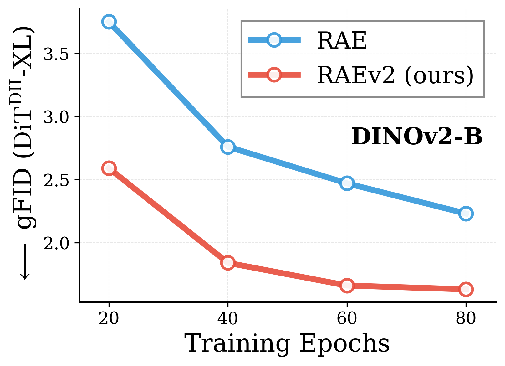
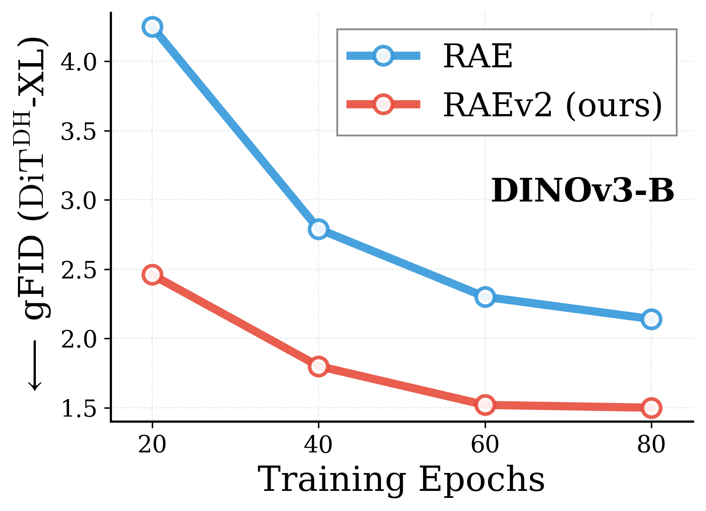
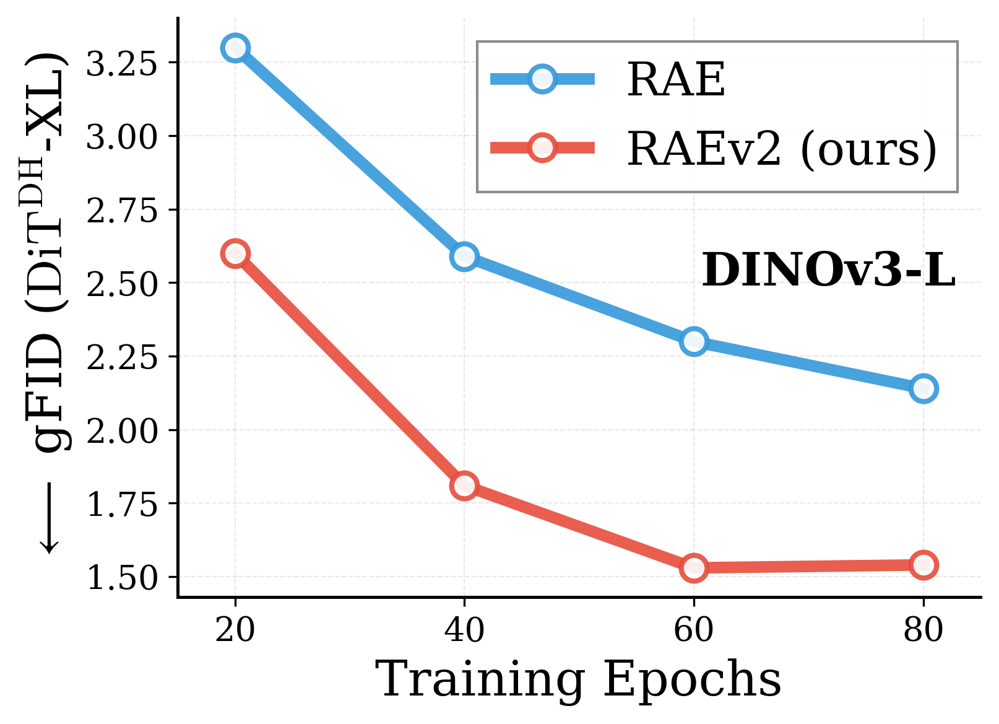
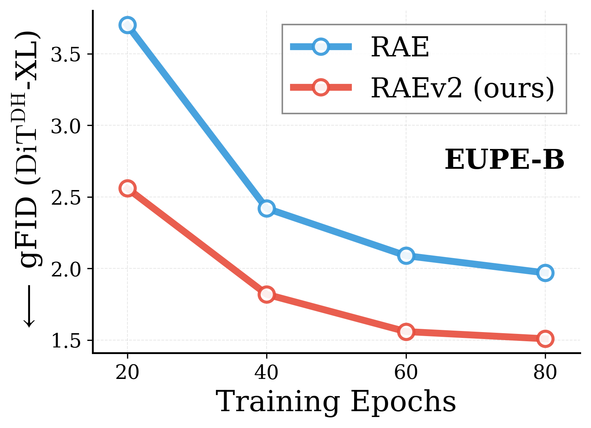
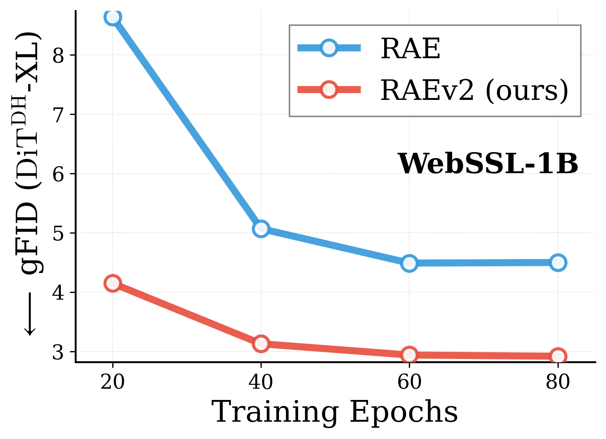
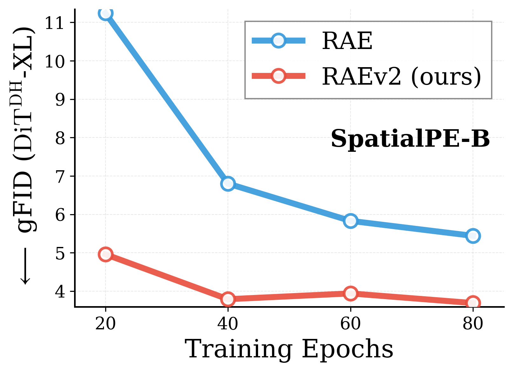
Convergence comparison with original RAE. Across DINOv2-B, DINOv3-B/L, EUPE-B, WebSSL-1B, and SpatialPE-B, the improved training recipe (RAEv2) consistently leads to faster convergence. DiT$^{DH}$-XL, $K{=}1$ for RAEv2, batch size 1024.
3.2 Training Efficiency
Method
Epochs
E@FID-2 ↓
gFID ↓
SiT-XL/2
800
>800
2.12
DDT-XL
800
–
1.26
SiT-XL/2-REPA
800
>800
1.42
LightningDiT
800
>800
1.42
REG
800
560
1.54
REPA-E
800
480
1.12
RAE-XL
800
177
1.13
RAEv2 ($K{=}7$, ours)
80
35
1.06
Training efficiency. Compared to gFID, E@FID-$k$ (epochs to reach unguided gFID $\le k$; $k{=}2$ by default) shows much better variance across methods. Notably, RAE marks a huge jump over previous methods, going from 480 to 177. RAEv2 further improves, achieving E@FID-2 of just 35 epochs.
Suggestion. Incremental improvements in absolute gFID values might provide limited signal for practical applications. Inspired by the recent speedrun in the language domain, we also report training convergence using E@FID-$k$ (epochs to reach unguided gFID $\le k$).
Beyond gFID, we evaluate sample fidelity in six feature spaces.
Method
Incep.
ConvNeXt
DINOv2
MAE
SigLIP
CLIP
FD$_r^6$ ↓
SiT-XL/2
1.26
2.02
7.89
5.62
16.14
17.69
8.44
DDT-XL
0.75
1.02
4.26
4.11
10.16
13.86
5.70
SiT-XL/2-REPA
0.85
1.22
4.27
3.85
9.87
12.65
5.45
LightningDiT
0.85
1.09
3.76
3.02
8.47
10.21
4.57
REG
0.92
1.14
3.45
3.02
8.42
10.86
4.64
REPA-E
0.70
1.28
2.44
2.52
5.04
6.28
3.04
RAE-XL
0.69
1.79
2.11
3.30
3.79
7.87
3.26
RAEv2 ($K{=}7$, ours)
0.64
0.77
1.15
2.67
2.54
5.21
2.17
Representation Fréchet Distance. FD$_r$ measured in 6 feature spaces, with FD$_r^6$ as the average. All baselines train for 800 epochs. RAEv2 achieves state-of-the-art FD$_r^6$ of 2.17 in just 80 epochs without any post-training.
4. Generalization to Other Tasks
4.1 T2I Generation
We also validate our approach for large-scale text-to-image generation. We simply adapt DiT$^{DH}$-XL for T2I by replacing the in-context class-embedding tokens with 256 text-condition tokens from a Qwen3-0.6B model.
Text-to-image qualitative samples at 256×256.
Method
Pretraining
Finetuning
GenEval ↑
DPG ↑
GenEval ↑
DPG ↑
Flux-VAE
41.7
77.6
78.3
79.2
RAE
58.4
80.1
81.5
80.6
RAEv2 (ours)
62.4
81.7
82.7
82.3
Quantitative text-to-image generation results. RAEv2 leads to consistent improvements over Flux-VAE and the original RAE for T2I generation.
4.2 World Models
We further test our improved training recipe (RAEv2) on the navigation world model task[12]. Given $N{=}4$ past RGB frames, a sequence of egocentric actions, and a target time step, the model predicts the future RGB frame autoregressively. We train on RECON[13] at 4 FPS, reusing the DiT$^{DH}$-XL backbone and flow-matching recipe from our ImageNet experiments.
Video prediction quality. RAEv2-NWM achieves an FVD of 105.61 on RECON, substantially better than DIAMOND, NWM, and RAE. The same ordering holds at every horizon from 1 to 16 seconds on both FID and LPIPS. Qualitative rollouts also exhibit much less flickering between consecutive frames.
Method
DIAMOND
NWM
RAE
RAEv2 (ours)
FVD ↓
762.73
200.97
312.01
105.61
Video prediction quality up to 16s on RECON.
Ground Truth
RAE
RAEv2 (ours)
Autoregressive rollouts on RECON. RAE shows constant flickering (different number of windows across consecutive frames). RAEv2 retains local spatial information much better, leading to better interframe consistency and video generation for navigation world models. This leads to substantially better FVD performance (refer table) and much better adherence to action conditioning (more similar to GT). Videos shown at 2× playback speed; original ground truth video at 4 FPS.
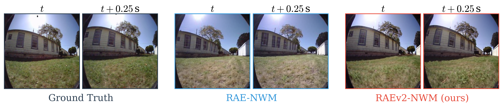
Fixed-frame comparison. Consecutive frames at $t$ and $t{+}0.25$s for ground truth, RAE, and RAEv2-NWM. RAE flickers across frames (e.g., different number of windows); RAEv2-NWM preserves low-level detail and scene structure across time.
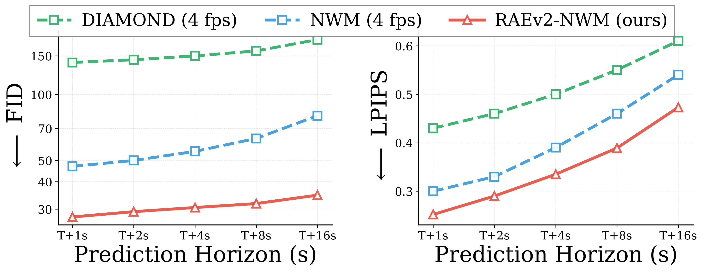
Future state prediction across rollout horizons. RAEv2-NWM (ours) vs. baselines at 1 and 4 FPS, up to 16 seconds of generated video on RECON.
Importance of generalized formulation. A large fraction of these gains comes from the generalized RAE formulation (Section 2.1). Earlier encoder layers retain low-level texture and geometry critical for temporally consistent navigation rollouts. This leads to better future-state prediction and video quality across rollout horizons.
Convergence speed. We also find that the generalized formulation leads to significant improvements in convergence speed for NWM. Since the model relies on features from previous frames, a representation that captures more low-level details not only gives better final performance but also allows much faster training.
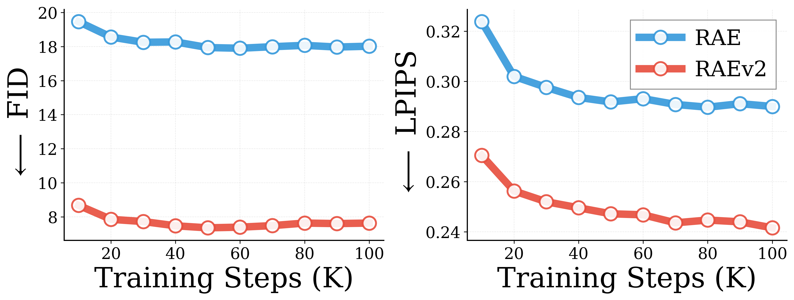
Convergence speed on RECON validation. FID and LPIPS over training steps for RAE vs. RAEv2-NWM (ours), single-shot prediction with target offset $\in [1, 8]$ frames at 4 FPS.
5. Conclusion
We study an improved baseline which simplifies and improves RAE. We find that frozen vision encoders themselves contain low-level details for reconstruction. Simply aggregating the last $K$ layers leads to Pareto-optimal reconstruction-generation performance.
We next perform large-scale empirical analysis showing that RAE and REPA exhibit complementary working mechanisms. Their combination is not only useful but also simplifies guidance with RAE. Furthermore it enables stronger representations (e.g., DINOv3-L) which excel in both spatial and global performance to also give better generation performance.
Overall, RAEv2 achieves 10× faster convergence over RAE, improves reconstruction, and achieves state-of-the-art gFID and FD$_r^6$ in just 80 epochs without any post-training. We also validate our improved recipe across diverse tasks, including T2I generation and world models, showing consistent improvements. We hope our work provides useful insights for practical adoption of representation autoencoders.
BibTeX
@article{singh2026raev2,
title = {Improved Baselines with Representation Autoencoders},
author = {Singh, Jaskirat and Zheng, Boyang and Wu, Zongze and Zhang, Richard and Shechtman, Eli and Xie, Saining},
journal = {arXiv preprint arXiv:2605.18324},
year = {2026},
}
References
Zheng, B., Ma, N., Tong, S., & Xie, S. (2025). Diffusion Transformers with Representation Autoencoders. arXiv:2510.11690.
Yu, S., Kwak, S., Jang, H., Jeong, J., Huang, J., Shin, J., & Xie, S. (2024). Representation Alignment for Generation: Training Diffusion Transformers Is Easier Than You Think. arXiv:2410.06940.
Singh, J., Leng, X., Wu, Z., Zheng, L., Zhang, R., Shechtman, E., & Xie, S. (2025). What Matters for Representation Alignment: Global Information or Spatial Structure? arXiv:2512.10794.
Ho, J., & Salimans, T. (2022). Classifier-Free Diffusion Guidance. arXiv:2207.12598.
Karras, T., Aittala, M., Kynkäänniemi, T., Lehtinen, J., Aila, T., & Laine, S. (2024). Guiding a Diffusion Model with a Bad Version of Itself (AutoGuidance). NeurIPS.
Li, T., & He, K. (2025). Back to Basics: Let Denoising Generative Models Denoise (JiT, x-prediction). arXiv:2511.13720.
Zhou, X., Li, Q., Hu, X., Chen, H., & Gu, S. (2025). Guiding a Diffusion Transformer with the Internal Dynamics of Itself. arXiv:2512.24176.
Oquab, M., et al. (2024). DINOv2: Learning Robust Visual Features without Supervision. TMLR. arXiv:2304.07193.
Peebles, W., & Xie, S. (2023). Scalable Diffusion Models with Transformers (DiT). ICCV. arXiv:2212.09748.
Ma, N., Goldstein, M., Albergo, M., Boffi, N., Vanden-Eijnden, E., & Xie, S. (2024). SiT: Exploring Flow and Diffusion-Based Generative Models with Scalable Interpolant Transformers. ECCV. arXiv:2401.08740.
Bar, A., Zhou, G., Tran, D., Darrell, T., & LeCun, Y. (2024). Navigation World Models. arXiv:2412.03572.
Sridhar, A., Shah, D., Glossop, C., & Levine, S. (2023). NoMaD: Goal Masked Diffusion Policies for Navigation and Exploration. arXiv:2310.07896.
Yang, J., Geng, Z., Ju, X., Tian, Y., & Wang, Y. (2026). Representation Fréchet Loss for Visual Generation.